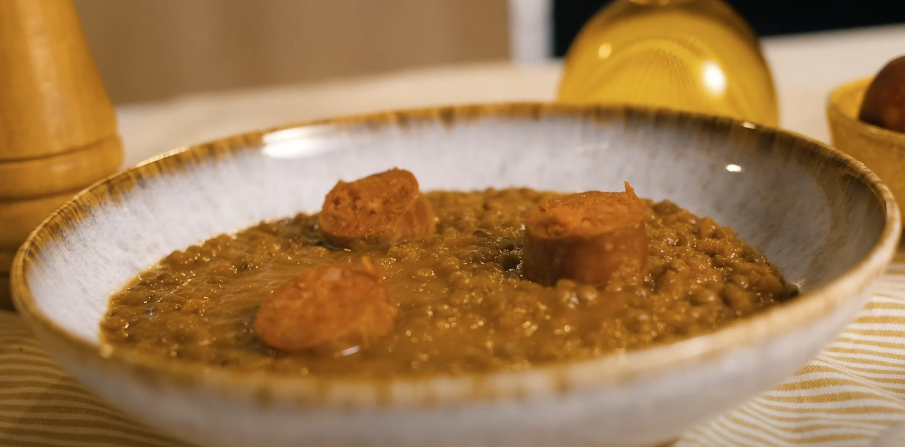

Vegan Spanish Lentils
Home
Vegan Spanish Lentils

This lentil stew has two secrets that make it stand out from any lentil-based dish you've had: soyrizo and a chunky but smooth texture.
It is perfect for cozy autumn nights, and you make mealprep a lot of it very easily!
300 gr lentils
1 green bell pepper (cut in half)
4 carrots (peeled)
1 large onion (cut in half)
1 leek (cut in half)
1 bay leaf
2 garlic cloves
1 soy chorizo or vegan sausage
2 tsp tomato paste
1 tbsp paprika
1 pinch of salt
1 tbsp olive oil
Steps
Rinse the lentils and put them into a deep cooking pot.
Peel the vegetables and the garlic cloves, and throw them in the pot.
Add water slightly above the level of the vegetables in the pot.
Heat the stove on medium, cover the pot, and let it bring to a boil.
When it's boiling, turn down to low heat. Keep an eye on the lentils and add more water if needed.
Let it cook on low heat for 25 minutes.
After this, the lentils should be cooked. We'll now take all the vegetables and any visible pieces of the soy chorizo and put them into a blender or a deep bowl.
We'll use an immersion blender to blend everything together. This will give it a creamy texture. You can decide if you want it chunky or completely smooth. I personally like leaving in there some small pieces for texture.
Then bring the blended veggies back into the pan with the lentils and mix all together.
A game changer step for platting: Cut a cooked vegan sausage in big pieces and add it on top of the lentils.
Get ready to eat one of the heartiest dishes you've ever had. The two secrets to this dish are blending all the vegetables using a immersion blender, and adding the pieces of sausage when platting.
Enjoy!